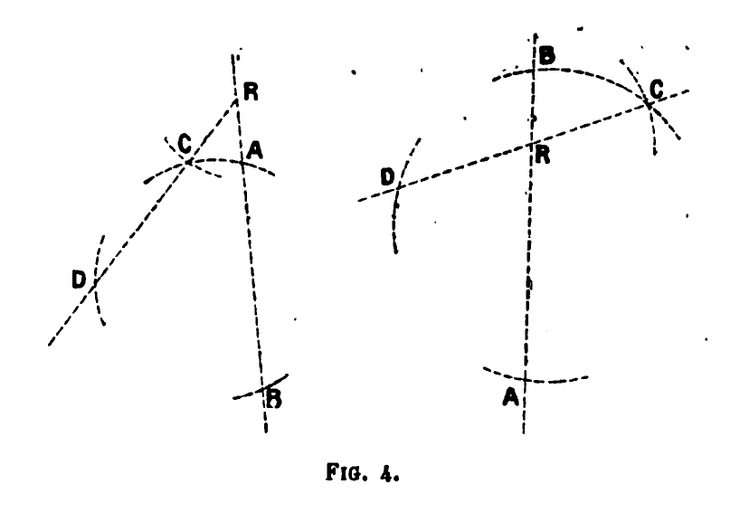
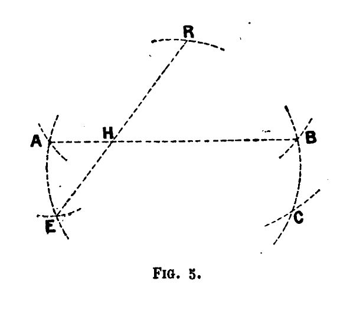

Problèmes XXXIII–XXXIV bis : Quatrième et troisième proportionnelles¶
Émile Lemoine — La Géométrographie (Texte français de référence, pp. 21–24, fols. 0037–0040)
Problème XXXIII (Euclide VI.12 — Quatrième proportionnelle :math:`X = frac{NP}{M}`). Lemoine compare quatre procédés distincts : a) méthode classique des parallèles (\(S = 25, E = 16\)) ; b) puissance d’un point par rapport à un cercle (FIG. 4, p. 21 : \(2R_1 + 2R_2 + 11C_1 + C_2 + 6C_3\), \(S = 22, E = 14\)) ; c) cordes inscrites dans une circonférence arbitraire (FIG. 5, p. 22) ; d) cercles concentriques de Mascheroni (méthode non générale).


Dans la méthode c) (FIG. 5), les cordes \(RA = N\), \(RB = P\) et \(RC = M\) inscrites dans un cercle quelconque déterminent directement RH \(= NP/M\) par intersection de RC et AB.


Problème XXXIV (Euclide VI.11 — Troisième proportionnelle :math:`X = frac{N^2}{M}`). La construction générale issue de c) donne \(\mathrm{op.} : (4R_1 + 2R_2 + 5C_1 + C_2 + 3C_3)\) ; \(S = 15, E = 10\) (2 droites, 3 cercles). Lorsque \(N < 2M\), deux cercles et une droite suffisent : \(2R_1 + R_2 + 4C_1 + C_2 + 2C_3\) (\(S = 10, E = 7\)).
f. 0040 · p. p. 24Problème XXXIV bis. Dans un triangle tracé \(ABC\), construire l’angle \(\angle BAK = C\) donne simultanément \(AK = \frac{bc}{a}\) et \(BK = \frac{c^2}{a}\) par le seul symbole \(2R_1 + R_2 + 5C_1 + 3C_3\) (\(S = 11\)).